I have tested my website for compatibility across multiple browsers, including Edge, Chrome, Opera GX, and Firefox. Here are the results:
Screenshot of my website in Google Chrome:
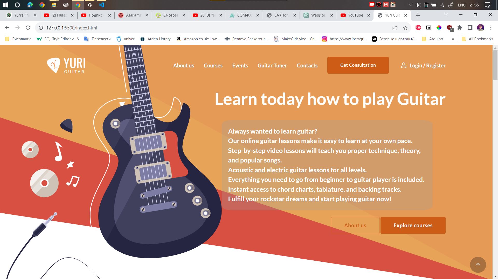Screenshot of my website in Microsoft Edge:
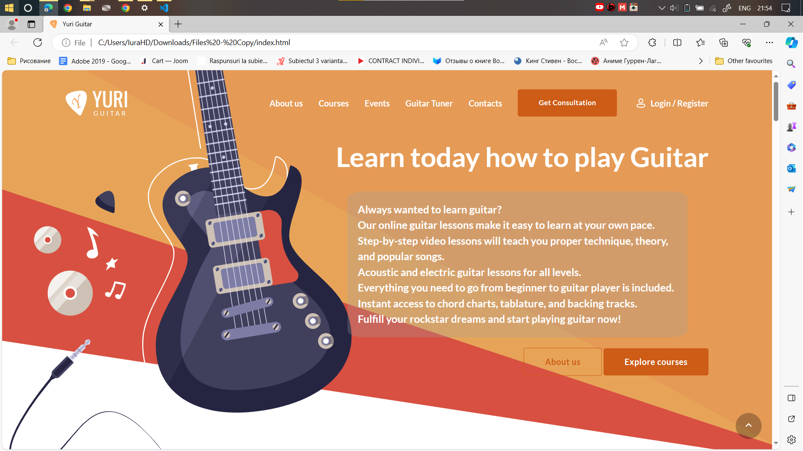Screenshot of my website in Opera GX:
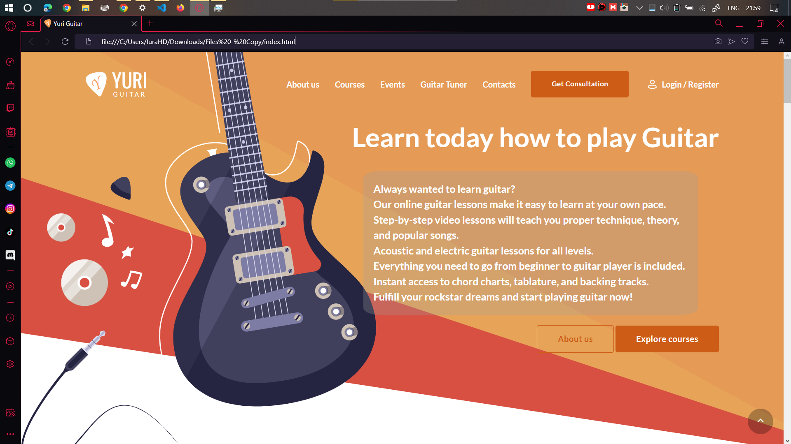Screenshot of my website in Mozilla Firefox:

For phone display testing, my website was reviewed on an iPhone 12 Pro to guarantee optimal responsiveness and user-friendliness on mobile devices. The importance of a mobile-friendly experience cannot be overstated in today's digital landscape.
Screenshot of my website on an iPhone 12 Pro:
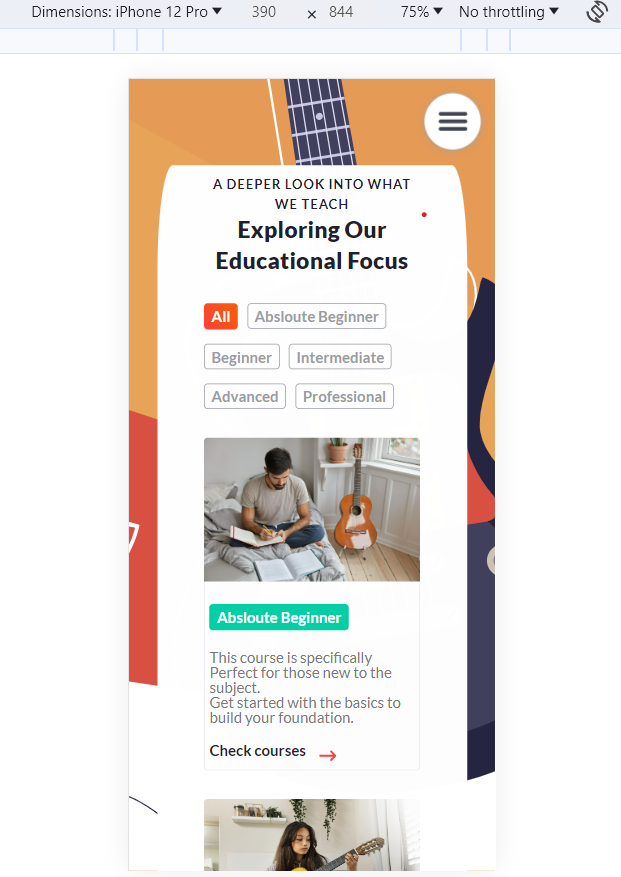Tablet display testing on an iPad Air was a crucial step in providing a seamless transition from mobile to larger screens. It's essential to adapt to various screen sizes, ensuring that users on tablets have an enjoyable experience.
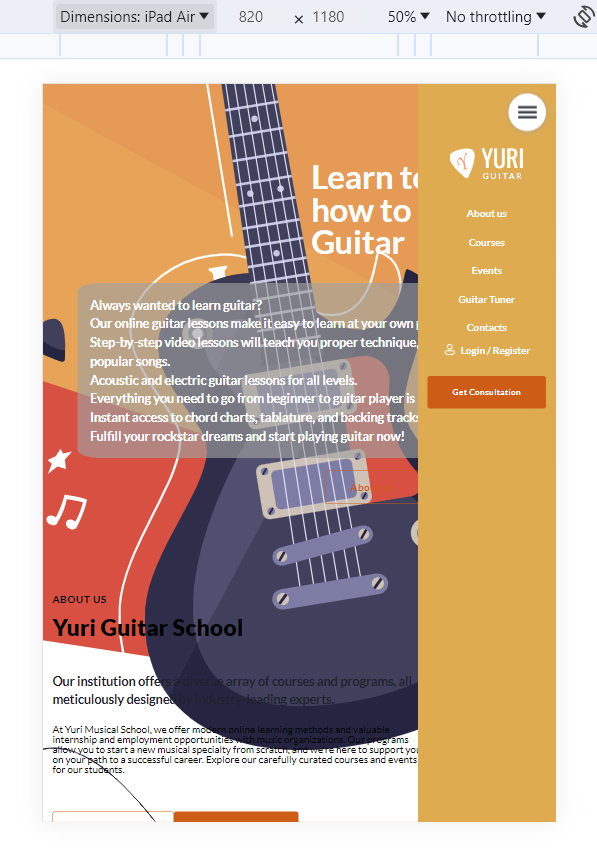Here are two screenshots depicting how the website appears to users with color vision deficiencies:
Screenshot of the website with a simulation of Protanopia:

Screenshot of the website with a simulation of Deuteranopia:

Here's a video from our website with screen reader accessibility. The video is accompanied by a transcript for users who rely on screen readers:
The validation process played a pivotal role in maintaining a well-structured website. The before-and-after reports highlighted the meticulous effort put into rectifying errors, enhancing code quality, and promoting accessibility.
I conducted validation tests for my website's HTML and CSS. Here are the before and after reports:
Screenshot of validation errors before making changes:
I fixed an issue where an unnecessary < / div> tag was present in the code. It has been removed to ensure proper HTML structure.
I addressed an error by removing the frameborder attribute from the video section, as it is not supported in HTML5.
An empty h2 tag is intentionally used as a placeholder for JavaScript content. It's not an error but rather a design choice, as JavaScript dynamically populates it with values.
Screenshot of validation errors after making necessary changes:
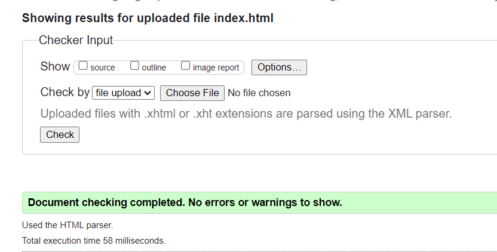 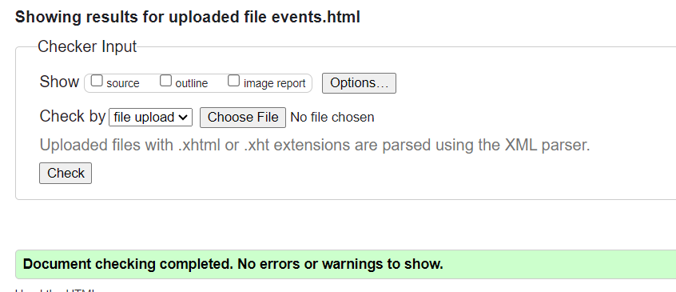
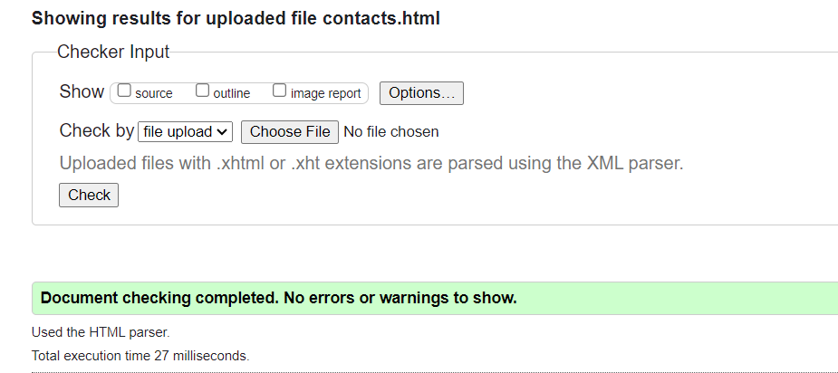
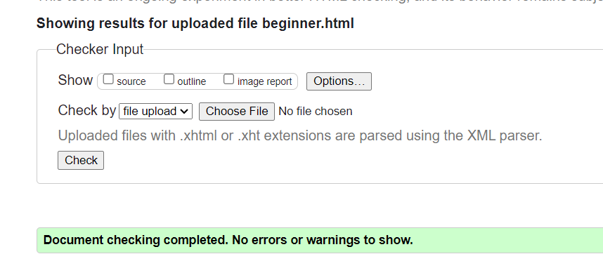
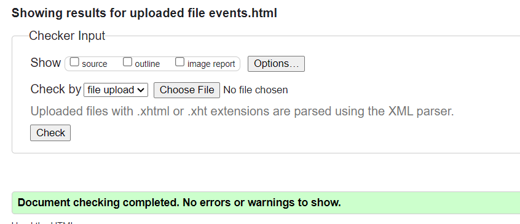
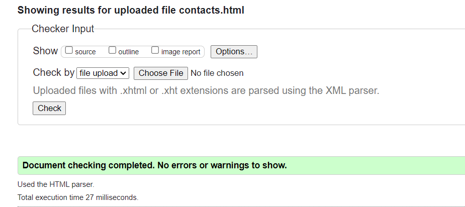
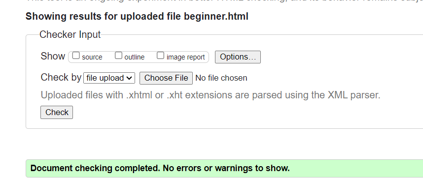
I assessed the readability and accessibility of my website's content to ensure it can be easily understood and navigated by all users, including those with disabilities. To do this, I used the WAVE extension tool, which checks for accessibility issues and provides recommendations for improvement.
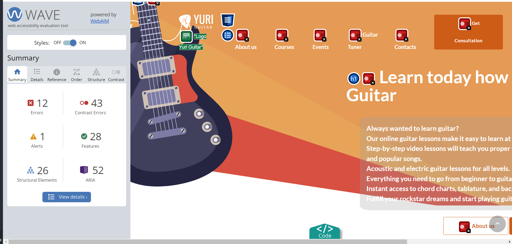 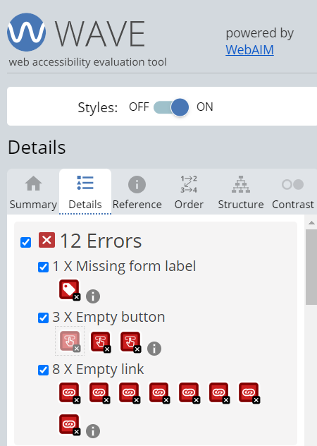Here are the findings from the WAVE extension tool:
In conclusion, my website has undergone extensive testing to ensure usability and accessibility across various browsers, devices, and user scenarios. The testing process involved:
This commitment to rigorous testing and attention to detail underscores my dedication to providing an inclusive and enjoyable user experience for all website visitors.